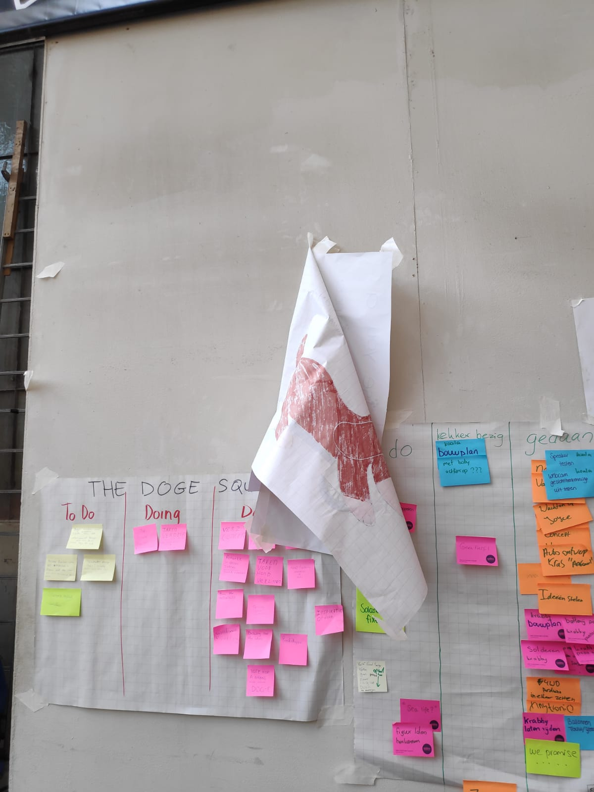
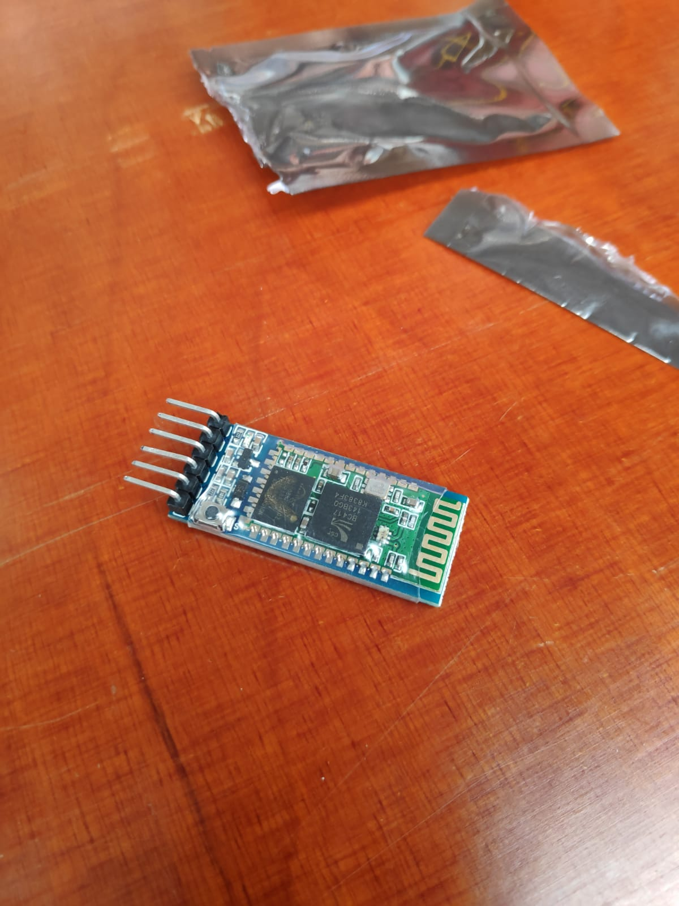
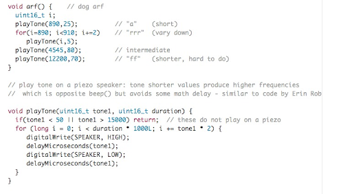

Lab Weeks - Dag 5
Dag nummer vijf begon helaas met een tragisch gezicht. Onze poster en promise waren losgekomen toen we niet aanwezig waren. Zie onderstaande afbeelding.
Vandaag gaan we verder werken aan de auto. Gisteren hebben we bijvoorbeeld de proximity sensor vastgemaakt. Vandaag gaat het technische team aan de slag met het programmeren van de auto. Nu staat alles nog los van elkaar, de auto maakt nog geen gebruik van de sensor. Het visuele team werkt ondertussen aan de LED Matrixen. Die hebben we op dag 4 binnen gekregen. Hiermee willen we dat de robothond wat meer playful wordt. Bijvoorbeeld door de hond een soort gezicht te geven dmv led lampjes die oplichten. Hieronder zien we de bluetooth module. Hiermee willen we de hond de juiste richting op sturen bij het apporteren.
Het visuele team is ondertussen bezig met een speaker, zodat de hond kan blaffen. Ik kreeg de onderstaande code doorgestuurd van Danique. Volgens het visuele team is het echter nog niet compleet. Zo klinkt het geluid niet hard en duidelijk genoeg. Daarnaast klinkt het nog niet echt goed naar een hond.
Hier zien we dat de LED matrix getest wordt door het visuele team.